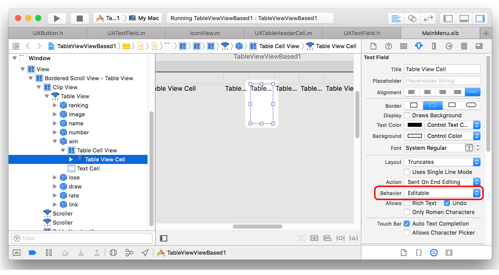

View Based テーブルビュー・データを更新する
![[テーブルビュー]](/lib/HTMLofImage.html?filename=/data/52/tableView.png&title=テーブルビュー&width=800)
動画はこちら
仕様
勝ち数、負け数、引き分けをクリックすると値の変更が可能となる。enterキーの押下により入力値が確定し、勝率の再計算を行い勝率の高い順にチームを並べ替える。変更内容を永続化するために、成績データはユーザデフォルトとしてファイルに保存する。
データオブジェクトの構造
実装のポイント
勝/負/引き分けのセルを編集可能にする
セルに入力された値をデータソースに更新する
NSTextFieldDelegateプロトコルを実装する。
次のメソッドはコントロールキー（enterやtabなど）が押されたときに起動する。勝/負/引き分け数が入力され enterキーが押されたときに、入力値のニューメリックチェックおよびデータソースへの更新行う。
テキストフィールドのセルの位置は引数に渡って来ないため、行の判定のためにサブクラスUATextFieldのプロパティにチーム名を持ち、列の判定のためにテキストフィールドのidentifireに列名を持つ。
テキストフィールドからフォーカスが外れたとき、テーブルビューを再表示させるために次のデリゲートメソッドを実装する。
テキストフィールドで編集中の文字列はString型（AttributedString型ではない）になる。編集中に値を更新することなく他のフォーカスに移った場合、そのテキストフィールドに属性のつかない素の文字列が設定されてしまう。これを避けるためにフォーカスが外れたとき必ずデータの再表示を行うようにしている。
【補足】
ViewBasedなテーブルビューであれば、セルの値が更新されたとき NSTableViewDlegateメソッドが起動する。これは引数に列オブジェクトと行のインデックスが渡ってきて使いやすいものであるが、CellBasedのテーブルビューではサポートされていない。
ユーザデフォルト（NSUserDefaults）
ウィンドウを閉じるときに成績データをユーザデフォルトに保存する。保存するオブジェクトは辞書とし、キーはチーム名の文字列、値は、勝/負/引き分け数（NSNumberオブジェクト）を要素とした配列とする。
アプリケーション起動時にユーザデフォルトを読み込みデータソースに展開する。
mutableなオブジェクトは、ユーザーデフォルトに保存するとimmutableに変わるので、再度読み込んだ後は、mutableに変換する必要がある。
チーム成績をカスタムクラス化する
勝/負/引き分け数のsetterメソッドを実装する。これらの値を更新したとき、勝率の再計算を行い表示オブジェクト（属性付き文字列）を再作成する。
KVC の valueForKey を利用してチーム成績クラスのメンバを取得する。メンバ名に文字列リテラルではなく、列オブジェクトが保持する変数名を指定できることができる。
クラス一覧
UATableView 列見出しの編集
UATableHeaderCell 列見出しの編集
UATextField セルの編集：属性付き文字列
IconView セルの編集：画像イメージ
UAButton カスタムボタン
UAUtility ユーティリティ・メソッド
UATeam チーム成績